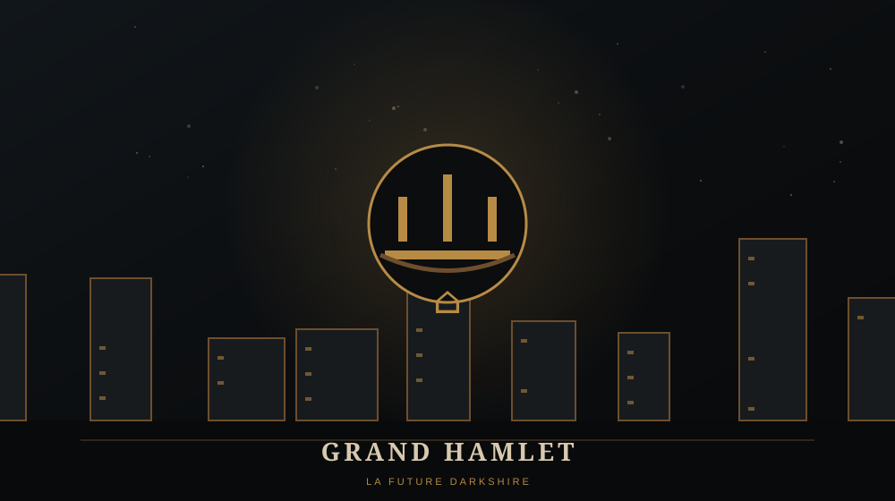

GRAND HAMLET

🏘️ GRAND HAMLET
Grand Hamlet est une ville humaine du royaume d'Azeroth. Très tôt dans la Première Guerre, elle se retrouve directement exposée aux forces de Blackhand.
Après Westfall, c'est l'un des premiers signes que la menace orque n'est plus une simple série d'incursions lointaines.
⚔️ DANS NOTRE CAMPAGNE
La deuxième mission humaine se déroule autour de Grand Hamlet. Les espions du royaume rapportent que les Orcs rassemblent leurs forces et le joueur est envoyé pour répondre à la menace.
Cette étape marque le passage du développement économique à une campagne véritablement militaire.
⚠️ LORE ULTÉRIEUR / SPOILERS
La région sera profondément transformée au fil du temps. L'héritage de Grand Hamlet est associé à Darkshire, principale ville de la sombre région de Duskwood dans World of Warcraft.
Les joueurs de World of Warcraft peuvent donc parcourir, sous une forme très différente, l'héritage d'un lieu présent depuis Warcraft I.